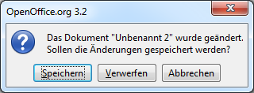

| Usability Pattern | Warnung |
|---|---|
| Problem | Benutzer möchten vermeiden, Aktionen irrtümlich oder versehentlich auszuführen, wenn sie diese Aktionen nicht einfach rückgängig machen können und die Ausführung z. B. Daten- oder Zeitverlust zur Folge hat. |
| Lösung |
Warne Benutzer vor der Ausführung irreversibler Aktionen. Weise auf die Konsequenzen der Ausführung hin und darauf, dass die Aktionen nicht rückgängig gemacht werden kann. Lass Benutzer die Ausführung explizit bestätigen und biete auch die Möglichkeit zum Abbruch. Dabei sollte bei der Art der erforderlichen Bestätigung die Schwere möglicher Konsequenzen berücksichtigt werden. Biete Benutzern ggf. die Möglichkeit, vor der Ausführung der Aktionen zunächst andere Aktionen auszuführen, wenn dadurch irreversible Konsequenzen vermieden werden können, z. B. durch Speichern von Daten vor dem Beenden des Programms. Biete Benutzern ggf. die Möglichkeit, bestimmte Warnungen dauerhaft zu deaktivieren. |
| Illustration | In einem Textverarbeitungsprogramm möchte der Benutzer ein ungespeichertes Dokument schließen. Das System warnt den Benutzer und weist darauf hin, dass das Dokument ungespeicherte Änderungen enthält, die verloren gehen, wenn der Benutzer fortfährt. Das System bietet dem Benutzer die Möglichkeit, fortzufahren, das Dokument zunächst zu speichern oder die Aktion abzubrechen und zum Dokument zurückzukehren. |
| Beispiele |
Apple Mac OS X: Papierkorb Gelöschte Dateien verbleiben unter Mac OS X zunächst im „ Papierkorb“ , bis der Benutzer diesen explizit „leert“. Das Entleeren des Papierkorbs ist irreversibel. Das System warnt den Benutzer deshalb ausdrücklich, weist auf die Konsequenz des Aktion „Papierkorb leeren“ hin und fordert eine Bestätigung, bevor die Aktion ausgeführt wird.  Warnung und Sicherheitsabfrage beim Leeren des Papierkorbs in Mac OS X OpenOffice: Warnung bei ungespeicherten Änderungen OpenOffice zeigt eine Warnung an, wenn Benutzer ein Dokument schließen oder das Programm beenden möchten und Änderungen an einem geöffnetes Dokument noch nicht gespeichert wurden. Benutzer haben die Möglichkeit, die Änderungen zu verwerfen oder doch noch zu speichern.  Warnung bei ungespeicherten Änderungen in OpenOffice |
| Nutzungskontext |
|
| Begründung | Warnungen dienen der Fehlervermeidung: Das System erlaubt Benutzern, die irrtümliche Ausführung von Aktionen und resultierende ungewollte Konsequenzen zu verhindern. |
| Risiken, Nachteile, Kosten |
Häufige Warnungen können dazu führen, dass Benutzer die Warnungen nicht mehr ernst nehmen und die Ausführung von Aktionen unbesehen bestätigen. Die Zahl der Warnungen sollte somit auf das notwendige Maß beschränkt werden. Die Möglichkeit, Aktionen rückgängig zu machen ( Undo ), sollte gegenüber Warnungen bevorzugt werden. Warnungen unterbrechen den Interaktionsablauf, den Benutzer erwarten. Häufige Warnungen können insbesondere Benutzer, die lange und regelmäßig mit dem System arbeiten, bei der Arbeit stören. Diesen Benutzern muss deshalb ggf. die Möglichkeit gegeben werden, bestimmte Warnung dauerhaft zu deaktivieren (aber bei Bedarf auch wieder zu aktivieren). |
| Zusammenspiel |
Alternative Globales Undo Das Usability Pattern Globales Undo (Rückgängigmachen ausgeführter Aktionen) erhöht ebenfalls die Fehlertoleranz, ohne dabei, wie im Fall von Warnungen, den von Benutzern erwarteten Interaktionsablauf zu unterbrechen. |
| Anforderungserhebung |
Identifiziere Aktionen, die Benutzer nicht oder nur mit erheblichem Aufwand rückgängig machen können.
Überlege, wie die Warnungen gestaltet werden sollen.
|
| Anforderungsspezifikation |
Spezifiziere globale Vorgaben für den Einsatz des Usability Patterns „ Warnung “:
Spezifiziere, für welche Interaktionen das Usability Pattern „ Warnung “ eingesetzt wird. Annotiere und ergänze dazu vorhandene Use Cases :
|
{kind=link}